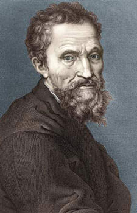
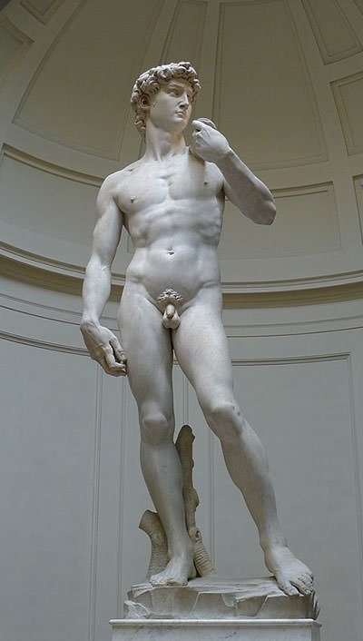
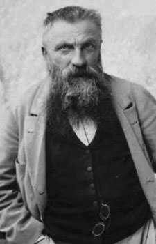
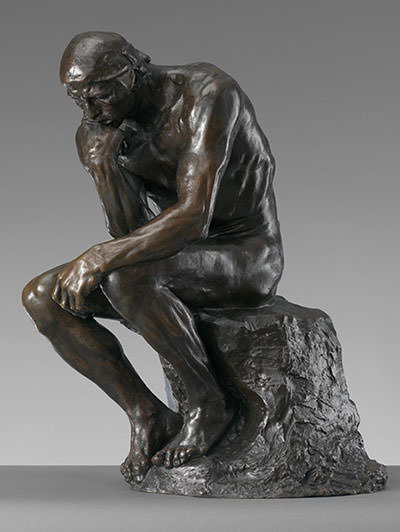
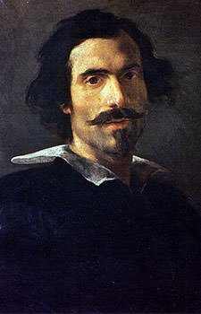
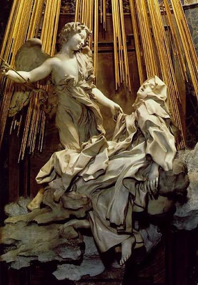

| ART People |
Sculpture is three dimensional art which was originally created by carving and modeling materials such as stone, metal, ceramics and wood. However, since the rise of Modernism in late 19th century, artists have used a wide variety of processes and materials to create sculptures.
Here you find a list of the 3 greatest sculptors of all time:

Lifespan: March 6, 1475 – February 18, 1564
Michelangelo di Lodovico
Buonarroti Simoni known simply as Michelangelo, was an Italian sculptor,
painter, architect and poet of the High Renaissance born in the Republic of
Florence, who exerted an unparalleled influence on the development of Western
art. His artistic versatility was of such a high order that he is often
considered a contender for the title of the archetypal Renaissance man. Several
scholars have described Michelangelo as the greatest artist of his age and even
as the greatest artist of all time.
A number of Michelangelo's
works of painting, sculpture and architecture rank among the most famous in
existence. His output in these fields was prodigious; given the sheer volume of
surviving correspondence, sketches and reminiscences, he is the best-documented
artist of the 16th century. He sculpted two of his best-known works, the Pietà
and David, before the age of thirty. Despite holding a low opinion of painting,
he also created two of the most influential frescoes in the history of Western
art: the scenes from Genesis on the ceiling of the Sistine Chapel in Rome, and
The Last Judgment on its altar wall. His design of the Laurentian Library
pioneered Mannerist architecture. At the age of 74, he succeeded Antonio da
Sangallo the Younger as the architect of St. Peter's Basilica. He transformed
the plan so that the western end was finished to his design, as was the dome,
with some modification, after his death.
Michelangelo was the first
Western artist whose biography was published while he was alive. In fact, two
biographies were published during his lifetime. One of them, by Giorgio Vasari,
proposed that Michelangelo's work transcended that of any artist living or dead,
and was "supreme in not one art alone but in all three".
In his lifetime, Michelangelo was often called Il Divino
("the divine one"). His contemporaries often admired his terribilità—his ability
to instil a sense of awe. Attempts by subsequent artists to imitate
Michelangelo's impassioned, highly personal style resulted in Mannerism, the
next major movement in Western art after the High Renaissance.
Masterpiece: David (1504)


Lifespan: November 12, 1840 – November 17, 1917
François Auguste René Rodin
was a French sculptor generally considered the founder of modern sculpture. He
was schooled traditionally and took a craftsman-like approach to his work. Rodin
possessed a unique ability to model a complex, turbulent, and deeply pocketed
surface in clay. He is known for such sculptures as The Thinker, Monument to
Balzac, The Kiss, The Burghers of Calais, and The Gates of Hell.
Many of Rodin's most notable sculptures were criticized as
they clashed with predominant figurative sculpture traditions in which works
were decorative, formulaic, or highly thematic. Rodin's most original work
departed from traditional themes of mythology and allegory. He modeled the human
body with naturalism, and his sculptures celebrate individual character and
physicality. Although Rodin was sensitive to the controversy surrounding his
work, he refused to change his style, and his continued output brought
increasing favor from the government and the artistic community.
From the unexpected naturalism
of Rodin's first major figure – inspired by his 1875 trip to Italy – to the
unconventional memorials whose commissions he later sought, his reputation grew,
and Rodin became the preeminent French sculptor of his time. By 1900, he was a
world-renowned artist. Wealthy private clients sought Rodin's work after his
World's Fair exhibit, and he kept company with a variety of high-profile
intellectuals and artists. His student, Camille Claudel, became his associate,
lover, and creative rival. Rodin's other students included Antoine Bourdelle,
Constantin Brâncuși, and Charles Despiau. He married his lifelong companion,
Rose Beuret, in the last year of both their lives. His sculptures suffered a
decline in popularity after his death in 1917, but within a few decades his
legacy solidified. Rodin remains one of the few sculptors widely known outside
the visual arts community.
Masterpiece: The Thinker (1902)


Lifespan: December 7, 1598 – November 28, 1680
Gian Lorenzo (or Gianlorenzo)
Bernini was an Italian sculptor and architect. While a major figure in the world
of architecture, he was more prominently the leading sculptor of his age,
credited with creating the Baroque style of sculpture. As one scholar has
commented, "What Shakespeare is to drama, Bernini may be to sculpture: the first
pan-European sculptor whose name is instantaneously identifiable with a
particular manner and vision, and whose influence was inordinately powerful...."
In addition, he was a painter (mostly small canvases in oil) and a man of the
theater: he wrote, directed and acted in plays (mostly Carnival satires), for
which he designed stage sets and theatrical machinery. He produced designs as
well for a wide variety of decorative art objects including lamps, tables,
mirrors, and even coaches.
As an architect and city planner, he designed secular
buildings, churches, chapels, and public squares, as well as massive works
combining both architecture and sculpture, especially elaborate public fountains
and funerary monuments and a whole series of temporary structures (in stucco and
wood) for funerals and festivals. His broad technical versatility, boundless
compositional inventiveness and sheer skill in manipulating marble ensured that
he would be considered a worthy successor of Michelangelo, far outshining other
sculptors of his generation. His talent extended beyond the confines of
sculpture to a consideration of the setting in which it would be situated; his
ability to synthesize sculpture, painting, and architecture into a coherent
conceptual and visual whole has been termed by the late art historian Irving
Lavin the "unity of the visual arts".
Masterpiece: Ecstasy of Saint Teresa (1652)
